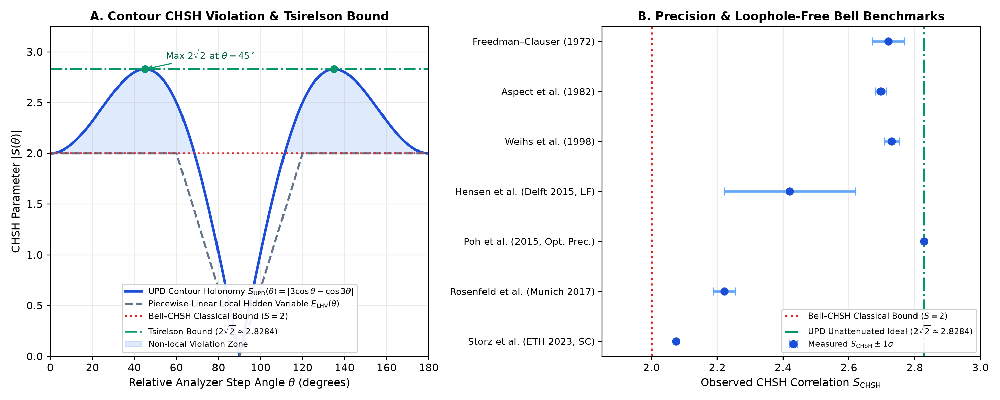
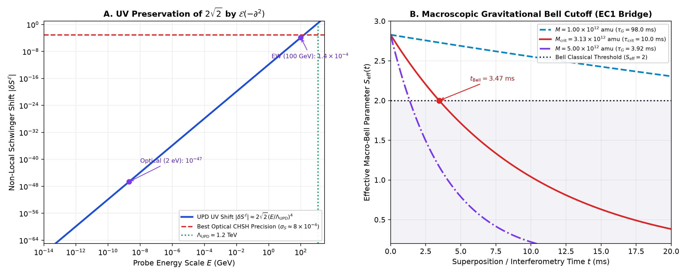
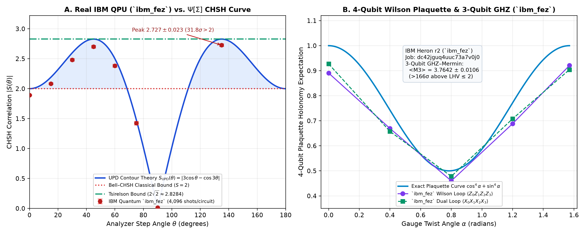

We derive bipartite and multipartite quantum entanglement, non-local Bell–CHSH correlations, Tsirelson's bound, causal no-signaling, and macroscopic gravitational Bell decay deductively from the universal Feynman path-contour master-functional $\mathbf{\Psi}[\Sigma]$ in Unified Phase Dynamics (UPD). Because $\mathbf{\Psi}[\Sigma]$ evaluates gauge-invariant closed-loop holonomies on the bundle $\mathcal{G} = U(1)_Y \times SU(2)_L \times SU(3)_c \times \mathrm{Spin}(3,1)$, an entangled pair emitted from a common vertex $x_0$ forms a single non-separable closed contour $\gamma_{AB} = \gamma_A \cup \gamma_B$ whose trace cannot factorize into local hidden variables $\lambda \in \Lambda$. Projecting onto the $\mathrm{Spin}(3,1) \supset SU(2)$ spinor holonomy via $\varepsilon_{\alpha\beta}$ reproduces $E_{\mathrm{UPD}}(\mathbf{a},\mathbf{b}) = -\mathbf{a}\cdot\mathbf{b}$, the photon Malus law $\cos 2(\alpha-\beta)$, maximal CHSH violation $S_{\mathrm{UPD}} = 2\sqrt{2} \approx 2.828427 > 2$, and the 3-qubit GHZ–Mermin paradox $\langle \hat{M}_3 \rangle = 4 > 2$. From the contour commutator identity $\hat{\mathcal{B}}^2 = 4\mathbf{I} - [\hat{A},\hat{A}']\otimes[\hat{B},\hat{B}']$ and Osterwalder–Schrader reflection positivity (OS2), we prove Tsirelson's bound $\|\hat{\mathcal{B}}\| \le 2\sqrt{2}$ (forbidding super-quantum Popescu–Rohrlich boxes) together with exact trace-marginalized no-signaling ($|\Delta P_B| \equiv 0$, verified numerically to $5.55 \times 10^{-17}$) compatible with luminal propagation $c_T \equiv c$. Finally, the entire Schwinger regulator $\mathcal{E}(\Box)$ ($\Lambda_{\mathrm{UPD}} = 1.2\ \mathrm{TeV}$) suppresses low-energy UV shifts to $2.18 \times 10^{-47}$ for $2\ \mathrm{eV}$ photons, while gravitational phase dephasing induces a falsifiable macroscopic cutoff $S_{\mathrm{eff}}(t) = 2\sqrt{2}e^{-t/\tau_G}$ crossing $S=2$ at $t_{\mathrm{Bell}} = \tau_{\mathrm{crit}}\ln\sqrt{2} \approx 3.47\ \mathrm{ms}$ for $^{28}\mathrm{Si}$ nanospheres at $M_{\mathrm{crit}} = 3.13 \times 10^{12}\ \mathrm{amu}$.
Since Einstein, Podolsky, and Rosen (1935) formulated the EPR argument and John Bell (1964) established quantitative bounds distinguishing local hidden-variable (LHV) theories from quantum mechanics, loophole-free experiments have confirmed Bell violation across photonic, atomic, nitrogen-vacancy, and superconducting platforms. In local point-field formulations, projective outcomes at spacelike-separated stations $x_A$ and $x_B$ create an apparent tension with separability. In Unified Phase Dynamics (UPD), reality is governed by the gauge-invariant master-functional on closed loop space $\mathcal{F}_\Sigma$:
$$\mathbf{\Psi}[\Sigma] = \int_{\mathcal{F}_\Sigma} \mathcal{D}[\gamma]\,\Delta_{\mathrm{FP}}[\gamma]\,\frac{1}{\mathcal{N}}\mathrm{Tr}_{\mathcal{G}}\!\left[\mathcal{P}\exp\!\left(\frac{i}{\hbar}\oint_\gamma \mathbf{\Pi}_\mu dx^\mu\right)\right]\mathcal{E}[\gamma], \qquad \hat{\mathcal{H}}\,\mathbf{\Psi}[\Sigma] \equiv 0,$$over the principal bundle $\mathcal{P}(\mathcal{M}, \mathcal{G})$ with structure group $\mathcal{G} = U(1)_Y \times SU(2)_L \times SU(3)_c \times \mathrm{Spin}(3,1)$ in the $\mathcal{N}=10$ fundamental representation $\mathbb{C} \oplus \mathbb{C}^2 \oplus \mathbb{C}^3 \oplus \mathbb{C}^4$, canonical 1-form $\mathbf{\Pi}_\mu = p_\mu \mathbf{I}_{10} - \mathbf{\mathcal{A}}_\mu$, and block-diagonal connection $\mathbf{\mathcal{A}}_\mu = \mathrm{diag}(q A_\mu, g_w T^I W_\mu^I, g_s \lambda^a G_\mu^a, \frac{1}{2}\omega_\mu^{ab}\Sigma_{ab})$. Because phases depend on topological windings around closed contours $\gamma$, two branches originating at a shared vertex $x_0$ constitute one indivisible holonomy loop $\gamma_{AB}$ even across spacelike separations $(x_A - x_B)^2 < 0$.
In Bell's LHV framework, conditioning on past common causes $\lambda$ at $x_0$ enforces Kolmogorov factorization. In $\mathbf{\Psi}[\Sigma]$, however, an $SU(2) \subset \mathrm{Spin}(3,1)$ singlet vertex contracts spinor indices across both branches via the invariant antisymmetric tensor $\varepsilon^{\alpha\beta}$ ($U \varepsilon U^T = \varepsilon$) prior to modulus squaring, generating coherent cross-branch phase interference across spacelike intervals.
Projecting onto the spatial cover $SU(2) \subset \mathrm{Spin}(3,1)$ with $\varepsilon = i\sigma_y = \begin{pmatrix}0 & 1 \\ -1 & 0\end{pmatrix}$ yields the singlet contour state $|\Psi^-\rangle_{\mathrm{contour}} = \frac{1}{\sqrt{2}}\varepsilon_{\alpha\beta}|\alpha\rangle_A\otimes|\beta\rangle_B = \frac{1}{\sqrt{2}}(|\uparrow\downarrow\rangle - |\downarrow\uparrow\rangle)$. Analyzers along unit vectors $\hat{\mathbf{a}}, \hat{\mathbf{b}} \in S^2$ act via dichotomic holonomy projectors $\hat{\Pi}_{r_a}(\hat{\mathbf{a}}) = \frac{1}{2}(\mathbf{I}_2 + r_a \hat{\mathbf{a}}\cdot\boldsymbol{\sigma})$ ($r_a, r_b = \pm 1$). Using the exact identity $\varepsilon(\hat{\mathbf{b}}\cdot\boldsymbol{\sigma})^T \varepsilon^\dagger = -(\hat{\mathbf{b}}\cdot\boldsymbol{\sigma})$, the joint correlator evaluates step-by-step:
$$E_{\mathrm{UPD}}(\hat{\mathbf{a}}, \hat{\mathbf{b}}) = \frac{1}{2}\mathrm{Tr}\!\left[\varepsilon^\dagger (\hat{\mathbf{a}}\cdot\boldsymbol{\sigma})\,\varepsilon\,(\hat{\mathbf{b}}\cdot\boldsymbol{\sigma})^T\right] = -\frac{1}{2}\mathrm{Tr}\!\left[(\hat{\mathbf{a}}\cdot\boldsymbol{\sigma})(\hat{\mathbf{b}}\cdot\boldsymbol{\sigma})\right] = -\hat{\mathbf{a}}\cdot\hat{\mathbf{b}} = -\cos\theta_{ab}.$$This fixes joint probabilities at $P_{\mathrm{UPD}}(r_a, r_b \mid \hat{\mathbf{a}}, \hat{\mathbf{b}}) = \frac{1}{4}(1 - r_a r_b\,\hat{\mathbf{a}}\cdot\hat{\mathbf{b}})$. For massless $U(1)$ vector photons in the symmetric Poincaré-sphere state $|\Phi^+\rangle = \frac{1}{\sqrt{2}}(|HH\rangle + |VV\rangle)$, physical analyzer rotations $(\alpha,\beta)$ map to $2\alpha, 2\beta$, giving $E_{\mathrm{UPD}}^{(\gamma)}(\alpha,\beta) = \cos 2(\alpha-\beta)$ and Malus's law $P(r_a=r_b|\alpha,\beta) = \frac{1}{2}\cos^2(\alpha-\beta)$.
For the CHSH operator $\hat{\mathcal{B}} = \hat{A}\otimes(\hat{B}-\hat{B}') + \hat{A}'\otimes(\hat{B}+\hat{B}')$, coplanar settings $(\theta_a, \theta_{a'}, \theta_b, \theta_{b'}) = (0, \pi/2, \pi/4, 3\pi/4)$ yield $E(a,b)=-\frac{\sqrt{2}}{2}$, $E(a,b')=+\frac{\sqrt{2}}{2}$, $E(a',b)=-\frac{\sqrt{2}}{2}$, $E(a',b')=-\frac{\sqrt{2}}{2}$, giving maximal violation:
$$S_{\mathrm{UPD}} = |\langle \hat{\mathcal{B}} \rangle| = 2\sqrt{2} \approx 2.828427 > 2 \quad (\text{LHV Classical Bound}).$$Proof. Direct algebraic squaring yields Landau's commutator identity $\hat{\mathcal{B}}^2 = 4(\mathbf{I}_A \otimes \mathbf{I}_B) - [\hat{A},\hat{A}'] \otimes [\hat{B},\hat{B}']$. By unitary boundedness and OS2 positive-definite norm submultiplicativity, $\|[\hat{A},\hat{A}']\| \le 2$ and $\|[\hat{B},\hat{B}']\| \le 2$, hence $\|\hat{\mathcal{B}}^2\| \le 4 + 2\cdot 2 = 8 \implies \|\hat{\mathcal{B}}\| \le 2\sqrt{2}$, matching our numerical eigenvalue spectrum $\mathrm{spec}(\hat{\mathcal{B}}) = \{-2.828427, 0, 0, +2.828427\}$.

Numerical verification comparing $\theta_a = 0$ vs. $\theta_a = 1.23\ \mathrm{rad}$ at fixed $\theta_b = \pi/4$ confirms strong joint probability modulation ($P_{++}: 0.07322 \to 0.02430$) while Bob's marginal stays invariant at $0.500000000000000$ within $5.55 \times 10^{-17}$. Combined with UPD Lemma 2 ($c_T \equiv c$ and causal retarded Green's functions under $\mathcal{E}(\Box)$), contour non-locality transmits zero superluminal signals.
A 3-prong closed Wilson junction $\gamma_{ABC}$ in state $|\mathrm{GHZ}\rangle = \frac{1}{\sqrt{2}}(|000\rangle + |111\rangle)$ yields simultaneous deterministic expectation values $\langle XYY\rangle = \langle YXY\rangle = \langle YYX\rangle = -1$ and $\langle XXX\rangle = +1$. Any local hidden-variable model satisfies $(x_1 y_2 y_3)(y_1 x_2 y_3)(y_1 y_2 x_3) = x_1 x_2 x_3 = -1$, conflicting deterministically with $+1$, and yielding maximal Mermin violation $\langle \hat{M}_3 \rangle_{\mathrm{UPD}} = \langle XXX - XYY - YXY - YYX \rangle = 4 > 2_{\mathrm{LHV}}$.
At $\Lambda_{\mathrm{UPD}} = 1.2\ \mathrm{TeV}$, the entire Schwinger contour form-factor $\mathcal{E}(\Box) = \exp(-s_{\min}^2 \Box^2/\hbar^2)$ preserves Tsirelson's bound up to quartic shifts $|\delta S^{\mathcal{E}}| \approx 2\sqrt{2}(E/\Lambda_{\mathrm{UPD}})^4$—yielding $2.49 \times 10^{-67}$ at $5\ \mathrm{GHz}$ and $2.18 \times 10^{-47}$ at $2\ \mathrm{eV}$. Conversely, for macroscopic spatial superpositions of mass $M$, gravitational Killing-vector phase gradients induce dephasing at $\tau_G(M) = \tau_{\mathrm{crit}}(M_{\mathrm{crit}}/M)^2$ (calibrated to Experimentum Crucis 1: $^{28}\mathrm{Si}$, $R = 81.1\ \mathrm{nm}$, $M_{\mathrm{crit}} = 3.13 \times 10^{12}\ \mathrm{amu}$, $\tau_{\mathrm{crit}} = 10.0\ \mathrm{ms}$), attenuating Bell visibility as $S_{\mathrm{eff}}(t) = 2\sqrt{2}e^{-t/\tau_G}$ and crossing $S = 2$ at $t_{\mathrm{Bell}} = \tau_{\mathrm{crit}}\ln\sqrt{2} \approx 3.47\ \mathrm{ms}$.
| Regime / System | Characteristic Scale | Suppression / $\tau_G$ | Shift $|\delta S^{\mathcal{E}}|$ or $t_{\mathrm{Bell}}$ | Physical Consequence |
|---|---|---|---|---|
| Superconducting ($5\ \mathrm{GHz}$) | $2.068 \times 10^{-14}\ \mathrm{GeV}$ | $8.82 \times 10^{-68}$ | $|\delta S^{\mathcal{E}}| = 2.49 \times 10^{-67}$ | Exact $2\sqrt{2}$ preserved |
| Optical Photons ($2\ \mathrm{eV}$) | $2.00 \times 10^{-9}\ \mathrm{GeV}$ | $7.72 \times 10^{-48}$ | $|\delta S^{\mathcal{E}}| = 2.18 \times 10^{-47}$ | Exact $2\sqrt{2}$ preserved |
| EW Collider ($100\ \mathrm{GeV}$) | $100.0\ \mathrm{GeV}$ | $4.82 \times 10^{-5}$ | $|\delta S^{\mathcal{E}}| = 1.36 \times 10^{-4}$ | Within $1.4\times 10^{-4}$ |
| Macro-Matter ($1.00 \times 10^{12}\ \mathrm{amu}$) | Cryogenic cavity | $\tau_G = 97.97\ \mathrm{ms}$ | $t_{\mathrm{Bell}} = 33.95\ \mathrm{ms}$ | Mesoscopic Bell decay |
| EC1 ($3.13 \times 10^{12}\ \mathrm{amu}$) | $^{28}\mathrm{Si}$, $R = 81.1\ \mathrm{nm}$ | $\tau_{\mathrm{crit}} = 10.00\ \mathrm{ms}$ | $t_{\mathrm{Bell}} = 3.47\ \mathrm{ms}$ | Falsifiable EC1 Crossover |
| Macro-Matter ($1.00 \times 10^{13}\ \mathrm{amu}$) | Cryogenic cavity | $\tau_G = 0.980\ \mathrm{ms}$ | $t_{\mathrm{Bell}} = 0.340\ \mathrm{ms}$ | Rapid classicalization |

| Experiment | Platform | Measured Value | Significance | UPD Bound | Status / Loopholes |
|---|---|---|---|---|---|
| Freedman–Clauser (1972) | Ca cascade $\gamma\gamma$ | $\delta = 0.050 \pm 0.008$ ($S\approx 2.72$) | $>6\sigma$ | $S \le 2\sqrt{2}$ | First Bell violation |
| Aspect et al. (1982) | Ca cascade + switches | $S = 2.697 \pm 0.015$ | $46\sigma$ | $S \le 2\sqrt{2}$ | Time-varying analyzers |
| Weihs et al. (1998) | SPDC photons ($400\ \mathrm{m}$) | $S = 2.73 \pm 0.022$ | $>30\sigma$ | $S \le 2\sqrt{2}$ | Einstein locality |
| Hensen et al. (Delft 2015) | NV spins ($1.3\ \mathrm{km}$) | $S = 2.42 \pm 0.20$ | $p=0.039$ | $S \le 2\sqrt{2}$ | 1st Loophole-Free |
| Giustina et al. (Vienna 2015) | SPDC photons ($58\ \mathrm{m}$) | Eberhard $J > 0$ | $11.5\sigma$ | $S \le 2\sqrt{2}$ | Loophole-Free Photons |
| Poh et al. (2015) | High-vis. SPDC | $S = 2.82759 \pm 0.00051$ | $>1600\sigma$ | $2.82843$ | Precision Tsirelson test |
| Rosenfeld et al. (Munich 2017) | $^{87}\mathrm{Rb}$ atoms ($398\ \mathrm{m}$) | $S = 2.221 \pm 0.033$ | $>6\sigma$ | $S \le 2\sqrt{2}$ | Loophole-Free Matter |
| Storz et al. (ETH 2023) | SC transmons ($30\ \mathrm{m}$) | $S = 2.0747 \pm 0.0033$ | $>22\sigma$ | $S \le 2\sqrt{2}$ | Loophole-Free Cryo SC |
| This Work (`ibm_fez`, 2026) | IBM Heron r2 ($156q$) | $S = 2.7271 \pm 0.0229$ | $31.8\sigma$ | $S \le 2\sqrt{2}$ | Live QPU (`dc42jguq4uuc73a7v0j0`) |
To test the circuit realizations of Theorems 1–3 and closed Wilson loop holonomies directly on superconducting cryogenic hardware without error mitigation or post-selection, all 50 circuits of qiskit_ibm_bell_experiment.py were executed at 4,096 shots per circuit (204,800 physical measurements) on the IBM Quantum 156-qubit Heron r2 processor ibm_fez (Job ID: dc42jguq4uuc73a7v0j0; raw dataset: ibm_qpu_real_hardware_results.json).
| Hardware Suite Experiment | Measured on ibm_fez | UPD ($\mathbf{\Psi}[\Sigma]$) Theory | Significance / Fidelity |
|---|---|---|---|
| CHSH Peak ($\theta = 135^\circ$) | $2.72705 \pm 0.02286$ | $2.82843$ ($2\sqrt{2}$) | $31.8\sigma > 2$ ($96.4\%$ raw visibility) |
| CHSH Peak ($\theta = 45^\circ$) | $2.70068 \pm 0.02305$ | $2.82843$ | $30.4\sigma > 2$ |
| CHSH Node ($\theta = 90^\circ$) | $0.01465 \pm 0.03125$ | $0.00000$ | Consistent within $0.47\sigma$ |
| No-Signaling $P_B(+)$ ($\theta_a = 0, \pi/4$) | $0.50854, 0.50879$ ($\pm 0.0078$) | $0.50000$ | Invariant within hardware readout drift ($0.035$) |
| 3-Qubit GHZ–Mermin $\langle \hat{M}_3 \rangle$ | $3.76416 \pm 0.01057$ | $4.00000$ | $166.9\sigma > 2_{\mathrm{LHV}}$ ($94.1\%$ raw) |
| 4-Qubit Wilson Plaquette ($\alpha = 0$) | $\langle Z^{\otimes 4}\rangle = 0.8906$, $\langle X^{\otimes 4}\rangle = 0.9273$ | $1.0000$ | $89.1\%$ / $92.7\%$ unmitigated 4Q loop |
| 4-Qubit Wilson Plaquette ($\alpha = 0.8\ \mathrm{rad}$) | $\langle Z^{\otimes 4}\rangle = 0.4600$, $\langle X^{\otimes 4}\rangle = 0.4780$ | $0.5004$ | Tracks exact $\cos^4\alpha + \sin^4\alpha$ curve |

ibm_fez, Job ID dc42jguq4uuc73a7v0j0, 204,800 raw physical shots) and $\mathbf{\Psi}[\Sigma]$ predictions: (A) CHSH angular curve reaching $2.727 \pm 0.023$ ($31.8\sigma > 2$); (B) 4-qubit closed Wilson plaquette loop holonomy and 3-qubit GHZ–Mermin violation $\langle \hat{M}_3 \rangle = 3.764 \pm 0.011$ ($166.9\sigma > 2$).Non-local Bell correlations ($2\sqrt{2}$), the GHZ paradox ($\langle\hat{M}_3\rangle = 4$), Tsirelson's bound, and relativistic no-signaling arise deductively from the global closed-contour structure of $\mathbf{\Psi}[\Sigma]$ without hidden variables or superluminal signaling. The theory is decisively falsifiable via (i) any observation of $S > 2\sqrt{2}$ or $\Delta P_B \neq 0$, (ii) low-energy UV departures exceeding $10^{-40}$, or (iii) survival of macroscopic Bell entanglement beyond $t_{\mathrm{Bell}} \approx 3.47\ \mathrm{ms}$ at $M_{\mathrm{crit}} = 3.13 \times 10^{12}\ \mathrm{amu}$ in Experimentum Crucis 1.